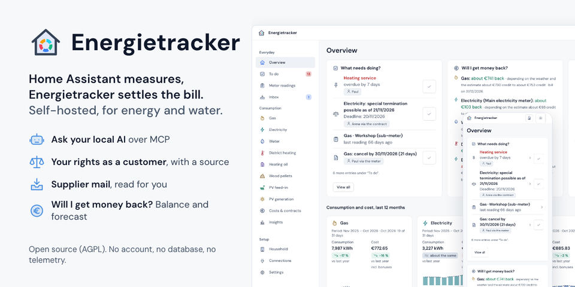

Energietracker
Energiekosten im Griff, selbst gehostet: Strom, Gas, Wasser und Wärme mit Bilanz, Rechnungsprüfung, Verträgen und Prognosen. Home Assistant misst, der Energietracker rechnet ab — mit lokaler KI über MCP.
- PHP
- Home Assistant
- AGPL-3.0